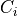
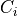
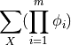

Cluster Graph
- class pgmpy.models.ClusterGraph.ClusterGraph(ebunch=None)[source]
Base class for representing Cluster Graph.
Cluster graph is an undirected graph which is associated with a subset of variables. The graph contains undirected edges that connects clusters whose scopes have a non-empty intersection.
Formally, a cluster graph is
 for a set of factors
for a set of factors  over is an
undirected graph, each of whose nodes
over is an
undirected graph, each of whose nodes  is associated with a subset
is associated with a subset  . A cluster
graph must be family-preserving - each factor
. A cluster
graph must be family-preserving - each factor  must be associated with a cluster C, denoted
, such that
must be associated with a cluster C, denoted
, such that ![Scope[\phi] \subseteq C_i](../_images/math/260bff74c877776133e4b0ef78151dd2dcc28e70.png) . Each edge between a pair of clusters 
and is associated with a sepset
. Each edge between a pair of clusters 
and is associated with a sepset  .
.- Parameters:
data (input graph) – Data to initialize graph. If data=None (default) an empty graph is created. The data is an edge list
Examples
Create an empty ClusterGraph with no nodes and no edges
>>> from pgmpy.models import ClusterGraph >>> G = ClusterGraph()
G can be grown by adding clique nodes.
Nodes:
Add a tuple (or list or set) of nodes as single clique node.
>>> G.add_node(('a', 'b', 'c')) >>> G.add_nodes_from([('a', 'b'), ('a', 'b', 'c')])
Edges:
G can also be grown by adding edges.
>>> G.add_edge(('a', 'b', 'c'), ('a', 'b'))
or a list of edges
>>> G.add_edges_from([(('a', 'b', 'c'), ('a', 'b')), ... (('a', 'b', 'c'), ('a', 'c'))])
- add_edge(u, v, **kwargs)[source]
Add an edge between two clique nodes.
- Parameters:
u (nodes) – Nodes can be any list or set or tuple of nodes forming a clique.
v (nodes) – Nodes can be any list or set or tuple of nodes forming a clique.
Examples
>>> from pgmpy.models import ClusterGraph >>> G = ClusterGraph() >>> G.add_nodes_from([('a', 'b', 'c'), ('a', 'b'), ('a', 'c')]) >>> G.add_edges_from([(('a', 'b', 'c'), ('a', 'b')), ... (('a', 'b', 'c'), ('a', 'c'))])
- add_factors(*factors)[source]
Associate a factor to the graph. See factors class for the order of potential values
- Parameters:
*factor (pgmpy.factors.factors object) – A factor object on any subset of the variables of the model which is to be associated with the model.
- Return type:
None
Examples
>>> from pgmpy.models import ClusterGraph >>> from pgmpy.factors.discrete import DiscreteFactor >>> student = ClusterGraph() >>> student.add_node(('Alice', 'Bob')) >>> factor = DiscreteFactor(['Alice', 'Bob'], cardinality=[3, 2], ... values=np.random.rand(6)) >>> student.add_factors(factor)
- add_node(node, **kwargs)[source]
Add a single node to the cluster graph.
- Parameters:
node (node) – A node should be a collection of nodes forming a clique. It can be a list, set or tuple of nodes
Examples
>>> from pgmpy.models import ClusterGraph >>> G = ClusterGraph() >>> G.add_node(('a', 'b', 'c'))
- add_nodes_from(nodes, **kwargs)[source]
Add multiple nodes to the cluster graph.
- Parameters:
nodes (iterable container) – A container of nodes (list, dict, set, etc.).
Examples
>>> from pgmpy.models import ClusterGraph >>> G = ClusterGraph() >>> G.add_nodes_from([('a', 'b'), ('a', 'b', 'c')])
- check_model()[source]
Check the model for various errors. This method checks for the following errors.
Checks if factors are defined for all the cliques or not.
Check for running intersection property is not done explicitly over here as it done in the add_edges method.
Checks if cardinality information for all the variables is available or not. If not it raises an error.
Check if cardinality of random variable remains same across all the factors.
- Returns:
check – True if all the checks are passed
- Return type:
boolean
- copy()[source]
Returns a copy of ClusterGraph.
- Returns:
ClusterGraph
- Return type:
copy of ClusterGraph
Examples
>>> from pgmpy.factors.discrete import DiscreteFactor >>> G = ClusterGraph() >>> G.add_nodes_from([('a', 'b'), ('b', 'c')]) >>> G.add_edge(('a', 'b'), ('b', 'c')) >>> phi1 = DiscreteFactor(['a', 'b'], [2, 2], np.random.rand(4)) >>> phi2 = DiscreteFactor(['b', 'c'], [2, 2], np.random.rand(4)) >>> G.add_factors(phi1, phi2) >>> graph_copy = G.copy() >>> graph_copy.factors [<DiscreteFactor representing phi(a:2, b:2) at 0xb71b19cc>, <DiscreteFactor representing phi(b:2, c:2) at 0xb4eaf3ac>] >>> graph_copy.edges() [(('a', 'b'), ('b', 'c'))] >>> graph_copy.nodes() [('a', 'b'), ('b', 'c')]
- get_cardinality(node=None)[source]
Returns the cardinality of the node
- Parameters:
node (any hashable python object (optional)) – The node whose cardinality we want. If node is not specified returns a dictionary with the given variable as keys and their respective cardinality as values.
- Returns:
int or dict – If node is not specified returns a dictionary with the given variable as keys and their respective cardinality as values.
- Return type:
If node is specified returns the cardinality of the node.
Examples
>>> from pgmpy.models import ClusterGraph >>> from pgmpy.factors.discrete import DiscreteFactor >>> student = ClusterGraph() >>> factor = DiscreteFactor(['Alice', 'Bob'], cardinality=[2, 2], ... values=np.random.rand(4)) >>> student.add_node(('Alice', 'Bob')) >>> student.add_factors(factor) >>> student.get_cardinality() defaultdict(<class 'int'>, {'Alice': 2, 'Bob': 2})
>>> student.get_cardinality(node='Alice') 2
- get_factors(node=None)[source]
Return the factors that have been added till now to the graph.
If node is not None, it would return the factor corresponding to the given node.
Examples
>>> from pgmpy.models import ClusterGraph >>> from pgmpy.factors.discrete import DiscreteFactor >>> G = ClusterGraph() >>> G.add_nodes_from([('a', 'b', 'c'), ('a', 'b'), ('a', 'c')]) >>> G.add_edges_from([(('a', 'b', 'c'), ('a', 'b')), ... (('a', 'b', 'c'), ('a', 'c'))]) >>> phi1 = DiscreteFactor(['a', 'b', 'c'], [2, 2, 2], np.random.rand(8)) >>> phi2 = DiscreteFactor(['a', 'b'], [2, 2], np.random.rand(4)) >>> phi3 = DiscreteFactor(['a', 'c'], [2, 2], np.random.rand(4)) >>> G.add_factors(phi1, phi2, phi3) >>> G.get_factors() >>> G.get_factors(node=('a', 'b', 'c'))
- get_partition_function()[source]
Returns the partition function for a given undirected graph.
A partition function is defined as

where m is the number of factors present in the graph and X are all the random variables present.
Examples
>>> from pgmpy.models import ClusterGraph >>> from pgmpy.factors.discrete import DiscreteFactor >>> G = ClusterGraph() >>> G.add_nodes_from([('a', 'b', 'c'), ('a', 'b'), ('a', 'c')]) >>> G.add_edges_from([(('a', 'b', 'c'), ('a', 'b')), ... (('a', 'b', 'c'), ('a', 'c'))]) >>> phi1 = DiscreteFactor(['a', 'b', 'c'], [2, 2, 2], np.random.rand(8)) >>> phi2 = DiscreteFactor(['a', 'b'], [2, 2], np.random.rand(4)) >>> phi3 = DiscreteFactor(['a', 'c'], [2, 2], np.random.rand(4)) >>> G.add_factors(phi1, phi2, phi3) >>> G.get_partition_function()
- remove_factors(*factors)[source]
Removes the given factors from the added factors.
Examples
>>> from pgmpy.models import ClusterGraph >>> from pgmpy.factors.discrete import DiscreteFactor >>> student = ClusterGraph() >>> factor = DiscreteFactor(['Alice', 'Bob'], cardinality=[2, 2], ... values=np.random.rand(4)) >>> student.add_node(('Alice', 'Bob')) >>> student.add_factors(factor) >>> student.remove_factors(factor)